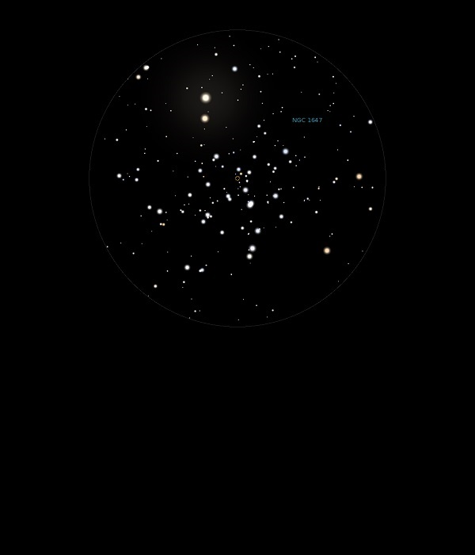

NGC 1647
Open Cluster in Taurus
NGC 1647
Mag 6.4
04/11/13
Big and
bright Open Cluster
Fills
the FOV in 12mm and really well defined in 25mm with two
bright stars at the top of the field (HIP 22176, Mag 5.95
being the brightest of the two, the other HIP 22161 at Mag
7.45)
13/12/14
This Open Cluster sits neatly in the FOV in 12mm and although
not nearly as dense as a Cluster like The Double Cluster has a
lot of paired stars